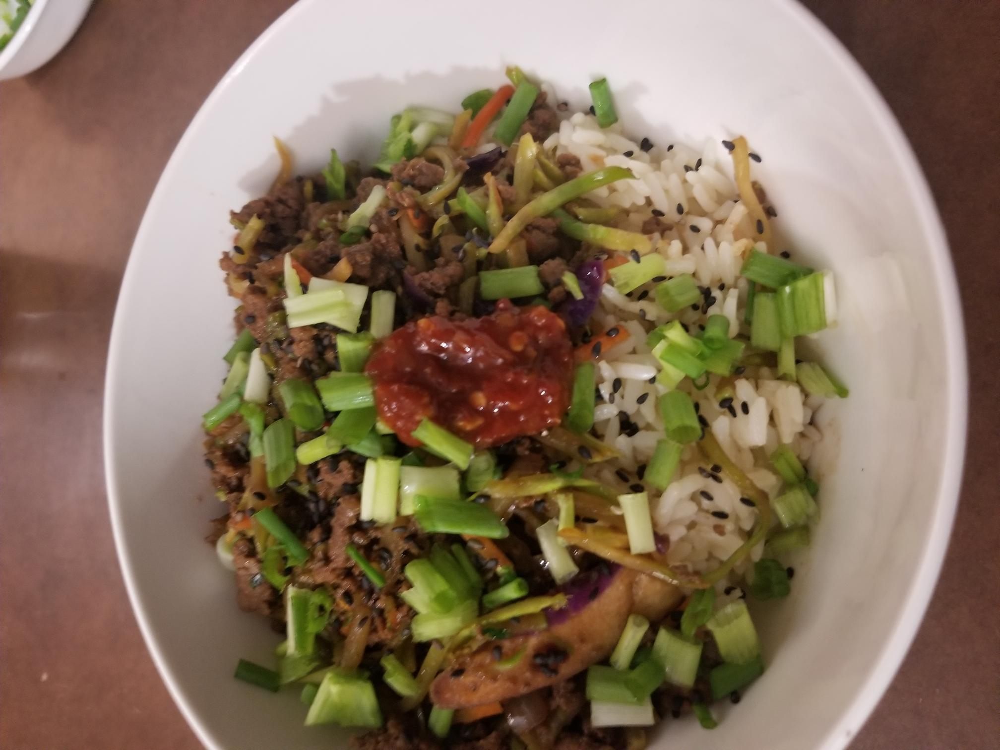

Egg Roll in a Bowl

Description
This is a great gluten free option or low carb if you replace the rice with lettuce wraps.
It is very tasty and you can decided how mild or spicy you want it with the optional
chili garlic sauce at the end.
It's a great weekday meal option as it can be ready in 20 minutes or less and is super flavorful
which makes it a staple weekday meal in our house. It is completely customizable we use a broccoli slaw
but you can use a premade coleslaw mix or cabbage and carrots finely sliced.
You can also use ground beef, pork, chicken or turkey.
Ingredients
- 3 cups of cooked Rice
- 1.5 lb Ground beef/ pork/ turkey/ chicken
- 3 Galric cloved minced
- 4 cups Broccoli slaw mix
- 1 Onion diced
- 1 tsp Onion powder
- 1 tsp Garlic powder
- 1 tsp Red Pepper flakes
- 2 tsp Ground Ginger
- 2 TBSP sesame oil
- 2 TBSP Avocado oil (or Chili oil if you prefer)
- 1/2 Cup low sodium Soya Sauce (use gluten free if you prefer)
- 2 tsp Rice Vinegar
Steps
- Brown the ground beef, drain and put back in pan
- Add onions and garlic into the pan, saute for a couple minutes
- Add sesame oil and broccoli slaw mix, Cook for 5 minutes
- In a small bowl combine remaining ingredients to make the sauce.
- Add sauce to the pan, reduce heat and let cook for 3-5 minutes
- Garnish with optional items such as Green onions, sesame seeds, and chili garlic sauce